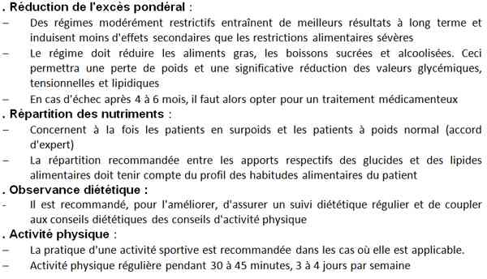
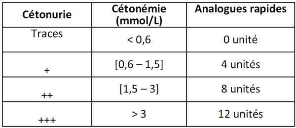
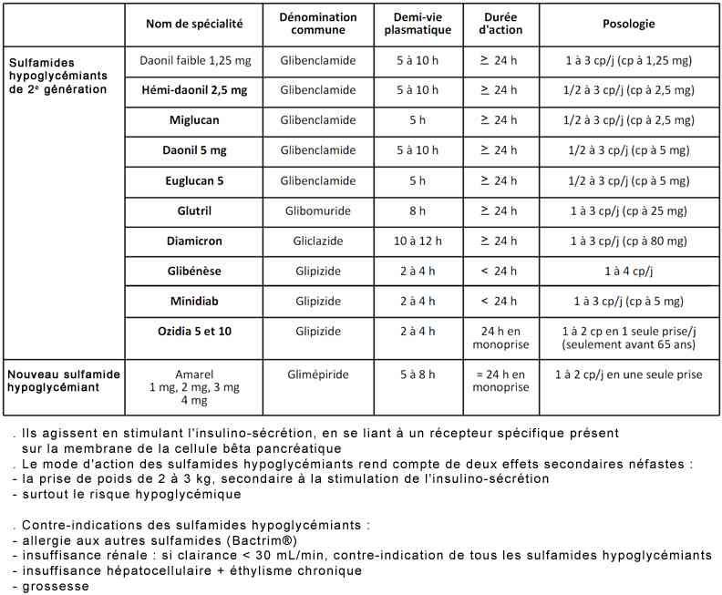
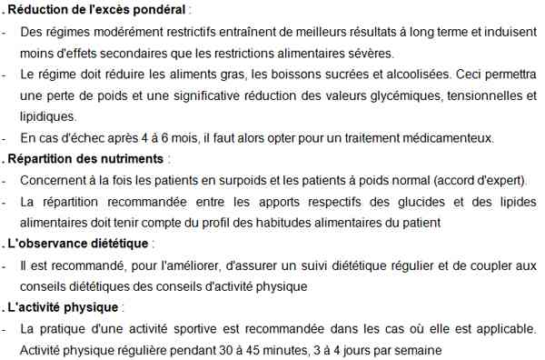

Bienvenue Sur Medical Education
Cétose sans acidose
Spécialité : endocrinologie /
Points importants
-
Glycémie > 2 g/L ou 11 mmol/L avec cétonurie +, cétonémie > 0,6 mmol/L, glycosurie +
-
Traduit une carence en insuline
-
C'est l'un des modes de découverte du diabète de type 1
-
On retrouve souvent une cause déclenchante (infection, grossesse, IDM, chirurgie)
Présentation clinique / CIMU
SIGNES FONCTIONNELS
Présentation clinique / CIMU
SIGNES FONCTIONNELS
Généraux : NA
- Polyuropolydypsie, amaigrissement (signes du syndrome cardinal) évoluant depuis plusieurs jours ou semaines
- Altération de l'état général récente
Spécifiques
- Anorexie
-
Troubles digestifs :
- nausées, vomissements
- voire douleurs abdominales simulant une gastroentérite (source d'erreur)
- pas encore de déshydratation patente ni de polypnée
CONTEXTE
Terrain :
- Patient diabétique de type 1
Traitement usuel
- Insuline
Facteurs de risque
- Problème d'éducation
- Erreur de traitement
- Absence de contrôle de glycémie capillaire
Circonstances de survenue
- Stress
- IDM
- Chirurgie
- Grossesse
- Introduction de corticoïde
EXAMEN CLINIQUE
Cardio-pulmonaire : signes en faveur
- D'une infection pulmonaire
- D'un IDM
Abdominal
- Douleur abdominale, crampes
Uro-néphrologique
- Signes cliniques en faveur d une pyélonéphrite
- Neurologique : recherche syndrome méningé
- Examen des pieds
- Etat cutané
- Neuropathie sensitive
- ROT vifs
Examen de la bouche, de la sphère ORL, de la peau
EXAMENS PARACLINIQUES SIMPLES
- Glycémie capillaire > 2 g/L
- Cétonémie > 0,6 mmol/L (dosage du 3 hydroxybutyrate)
- Bandelette urinaire : glycosurie + cétonurie + (dosage de l'acétone)
- ECG : trouble de la repolarisation, IDM
CIMU
- Tri 3 à 4 en fonction de la gravité
Signes paracliniques
BIOLOGIQUE
Si cétonémie ≤ 2 mmol/L
- Ionogramme sanguin : recherche d'une dyskaliémie, insuffisance rénale, glycémie élevée, trou anionique augmenté, réserve alcaline basse
Si cétonémie > 3 mmol/L
- Ionogramme sanguin : recherche d'une dyskaliémie, insuffisance rénale, fausse hyponatrémie, glycémie élevée, trou anionique augmenté, réserve alcaline basse
- Gaz du sang artériels : recherche d'une acidose si réserve alcaline basse (< 16 mmol/L)
- NFS : hyperleucocytose
- Bêta HCG si femme en âge de procréer
- BU+/-ECBU si signes en faveur d'une infection urinaire, pyélonéphrite
- Ponction lombaire si syndrome méningé
- ± hémoculture si température > 38.5°C
IMAGERIE
- Radio pulmonaire si signe en faveur d'une pneumopathie
Diagnostic étiologique
-
Situation d'infection
-
Stress intercurrent
-
Chirurgie
-
Grossesse
-
Début de traitement par corticoïde
-
Syndrome coronarien aigu +
-
AVC
-
Erreur de traitement
Traitement
TRAITEMENT PREHOSPITALIER / INTRAHOSPITALIER
Traitement
TRAITEMENT PREHOSPITALIER / INTRAHOSPITALIER
Stabilisation initiale
- Rechercher un facteur déclenchant (infection, stress, IDM, AVC )
- Maintenir des apports glucidiques, per os ou IV si per os non possible
SUIVI DU TRAITEMENT
Recommandations pour les patients diabétiques
 _43 Tableau Recommandations pour les patients diabétiques
Pour le diabétique de type 1 traité par insuline
- Augmenter l'insuline de base: (Lantus®, Levemir®, NPH) +++ de 2 à 4 UI / j selon le degré de décompensation
- + insuline rapide (NovoRapid®, Humalog®) / 2h +++, ou Actrapid® / 4h
 _27 Tableau Ajout d'insuline rapide toutes les 2 heures en cas de cétose
Pour le diabétique de type 2 traité par ADO
- Introduire de l'insuline (basal-bolus) (cf. acidocétose diabétique)
- Arrêt metformine en cas de décompensation rénale, cardiaque, respiratoire
-
Ajout d’insuline rapide (NovoRapid® ou Humalog®) toutes les 2h toutes les 4h heures si Actrapid® en cas de cétose
Si cétonémie > 3 mmol avec :
- HCO3- < 20 mmol/L : traitement comme une acidocétose diabétique
-
HCO3- > 20 mmol/L :
- +12 UI d'insuline rapide en SC en fonction glycémie
- + augmenter l'insuline de base, l'introduire si le patient n'en a pas
- hydratation avec NaCl 0,9% 3L/j
MEDICAMENTS
- Insulines rapides : Umuline rapide® ou Insuman rapide®, ou Actrapid ®
- Analogues : Apidra®, et NovoRapid®, Humalog® ++++
 _26 Tableau Sulfamides hypoglycémiants
Surveillance
PARACLINIQUE
-
Si cétonémie < 2 mmol/L : glycémie capillaire et cétonémie
-
/2h si patient sous NovoRapid®, Humalog®
-
/4h si patient sous Actrapid®
-
Si cétonémie entre 2 et 3 mmol/L : glycémie capillaire et cétonémie /h
-
Si cétonémie > 3mmol/L : cf. acidocétose diabétique)
-
Surveillance jusqu' à disparition de la cétonémie
Devenir / orientation
CRITERES D'ADMISSION
- /2h si patient sous NovoRapid®, Humalog®
- /4h si patient sous Actrapid®
Devenir / orientation
CRITERES D'ADMISSION
Hospitalisation dans un service d'endocrinologie si
- Pas d'amélioration clinique
- Persistance de la cétonémie / cétonurie, après 4h de surveillance
- Cétonémie > 3 mmol/L, vomissements, mauvaise éducation
- Diabète non connu et diabète type 2 mal équilibré et éduqué
CRITERES DE SORTIE DU SAU
- Patients diabétiques de type 1 et 2 connus et éduqués qui ont une cétonémie < 0,6 mmol/L et objectif glycémique à 2g/L soit 11 à 13 mmol /L
ORDONNANCE DE SORTIE
- Fonction de l'insuline du patient
Pour le diabétique de type 1
- Reprendre l'ancien traitement du patient en augmentant transitoirement les doses
- Intensifier la surveillance de la glycémie capillaire x3/j et cétonurie x2/j si glycémie capillaire > 7 mmol/L
- Rappeler les règles hygiénodiététiques
 _823 Tableau Règles hygièno diététiques
- Consultation en diabétologie dans le mois
Pour le diabétique de type 2 connu
- Prescrire dose maximale de sulfamides hypoglycémiants ou les introduire s'il n'y en avait pas (vérifier absence de contre-indication)
- - -
Pour le diabétique de type 2 méconnu
Auteur(s) : Johana BONI-MALKA, Marie LALOI-MICHELIN
RECOMMANDATIONS DE SORTIE
Mécanisme / description
Algorithme
Bibliographie